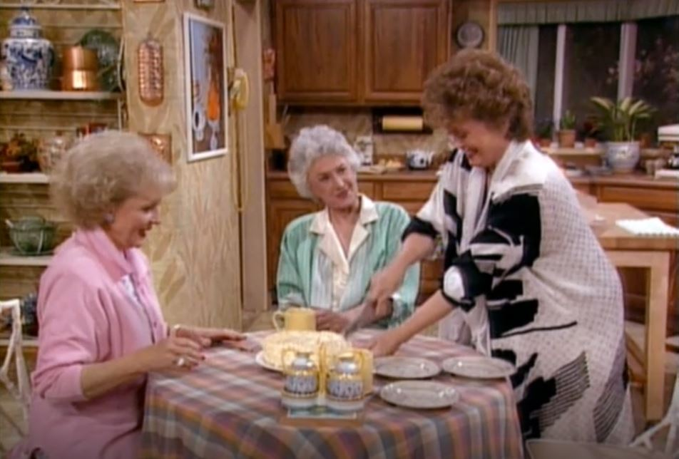

Golden Girls Cheesecake

The Golden Girls was a quintessential part of my childhood. I can recall countless times I watched the girls spend many an evening, morning, midday, and sometimes middle of the night around their infamous kitchen table indulging in a slice of cheesecake. Over the course of the show, cheesecake became not only a trope but a symbol of vulnerability and strength. This recipe is an ode to the girls and its impact on generations to come.
Ingredients
- 1/3 lb graham crackers, crushed
- 1/4 cup unsalted butter, melted
- 2lbs cream cheese, softened
- 3/4 cup granulated sugar
- 2 large eggs
- 2 tbsp fresh lemon juice
- 1/2 tsp pure vanilla extract
Steps
- Mix graham crackers and butter in a bowl, press into cheesecake pan and freeze.
- Adjust oven rack to center and preheat oven to 350°F.
- Place cream cheese and sugar in a mixer and blend until creamy. Add eggs one at a time while mixing. Add lemon juice and vanilla and blend well.
- Pour batter into frozen cheesecake bottom, smoothing to touch sides.
- Bake for 35-40 minutes until top starts to pull away from sides and looks a bit loose in center.
- Remove from oven and set on cooling rack for 10 minutes.
- Serve with fruit or whipped cream!